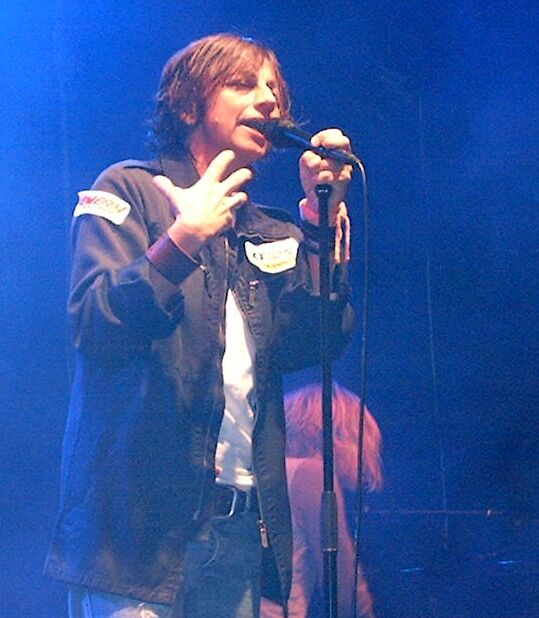

Ako vam prezime Nannini prvo prizove hrapavi glas iz pjesme Bello e impossibile, potražite ga i na vrhu službenog poretka Velike nagrade Japana 1989. Ondje stoji Alessandro Nannini, Benetton Ford.
Utrka koju pamtimo po dvojici drugih vozača
Suzuka je te nedjelje bila pozornica obračuna Ayrtona Senne i Alaina Prosta. Njihovi McLareni sudarili su se u šikani, a Prost je odustao. Senna se vratio u utrku i prvi prošao ciljem, da bi zatim bio diskvalificiran. U službenom poretku pobjednik je bio Nannini, a iza njega su završili Riccardo Patrese i Thierry Boutsen.
Alessandro je u Formulu 1 stigao s Minardijem 1986., a potom prešao u Benetton. Suzuka mu je ostala jedina F1 pobjeda. Priča o njoj najčešće počinje sudarom dvojice McLarena. Nanninijeva je priča zanimljiva i zbog onoga što se dogodilo poslije.
Povratak za upravljač Alfe
U listopadu 1990. Alessandro je teško ozlijedio desnu ruku u helikopterskoj nesreći. U Formulu 1 više se nije vratio. Ponovno je, međutim, vozio i pobjeđivao. Kad je Alfa Romeo 1993. tvornički ušao u njemački DTM s modelom 155 V6 Ti, Alessandro je bio u postavi uz Nicolu Larinija. DTM bilježi 14 njegovih pobjeda u DTM-u i ITC-u od 1993. do 1996.
Kad je Alessandro ušao u Giannin kadar

Gianna je u međuvremenu imala vlastitu priču. Njezin glas iz Bello e impossibile i I maschi postao je prepoznatljiv i izvan Italije. Kad je objavila kompilaciju Bomboloni, u spotu naslovne pjesme pojavio se i brat Alessandro. Ako ste ga dosad tražili samo u snimkama starih utrka, potražite ga i ondje.